Roll 02 · 35mm · summer
GRAD, AMONG REDWOODS
One graduate, one grove, one roll. Sun through the canopy did the lighting. This is the session Kiana books most. Honestly, she'd shoot it for free.
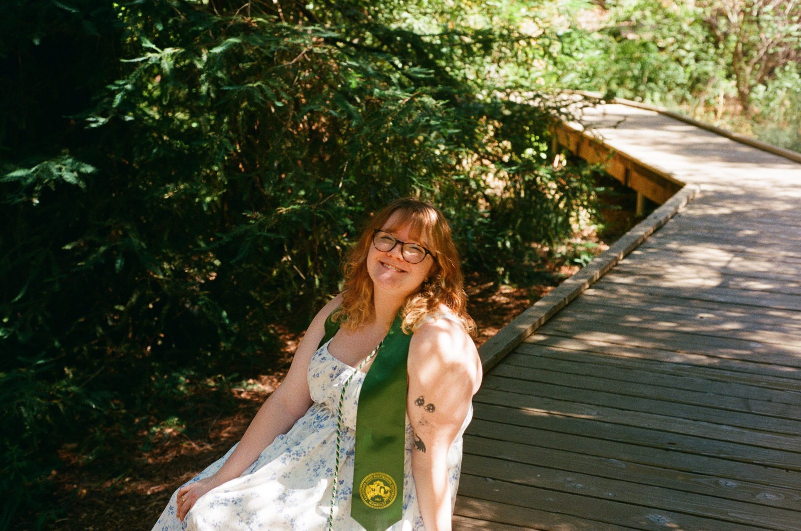
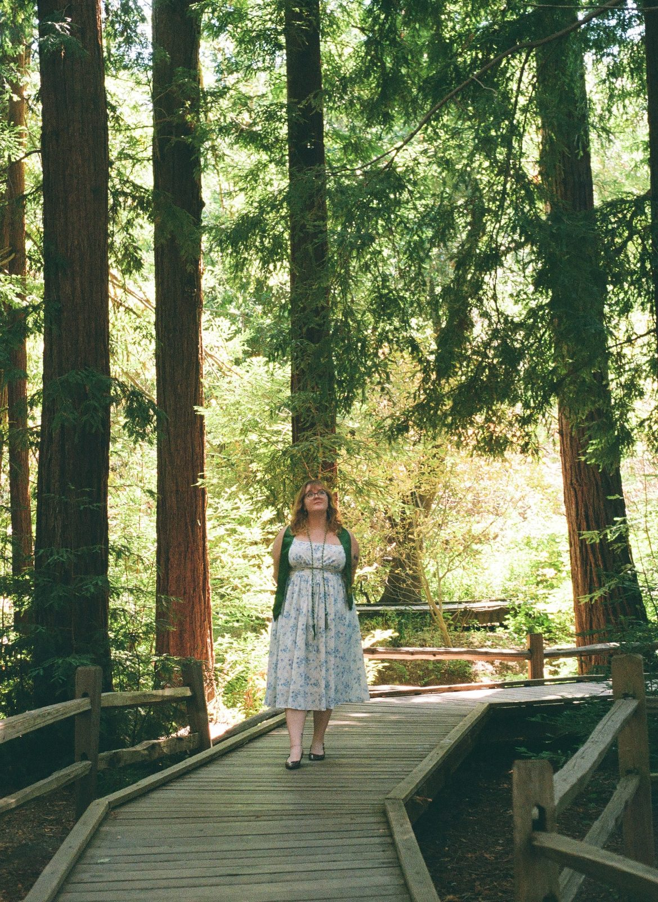
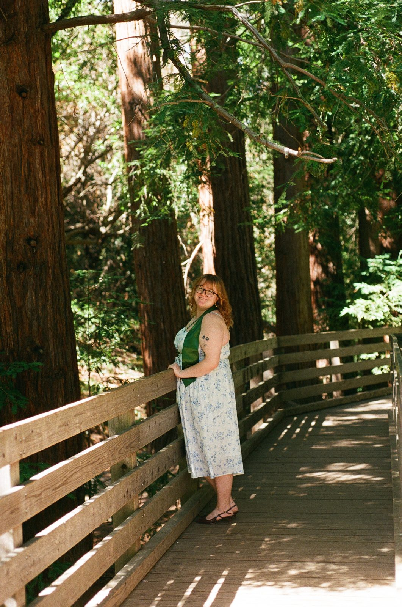
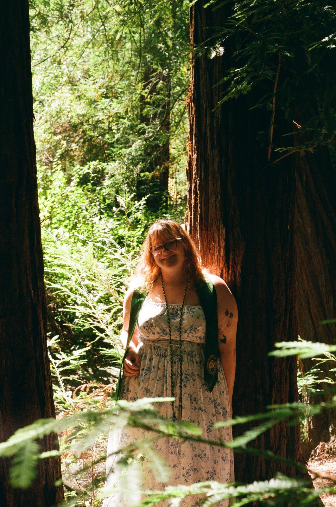
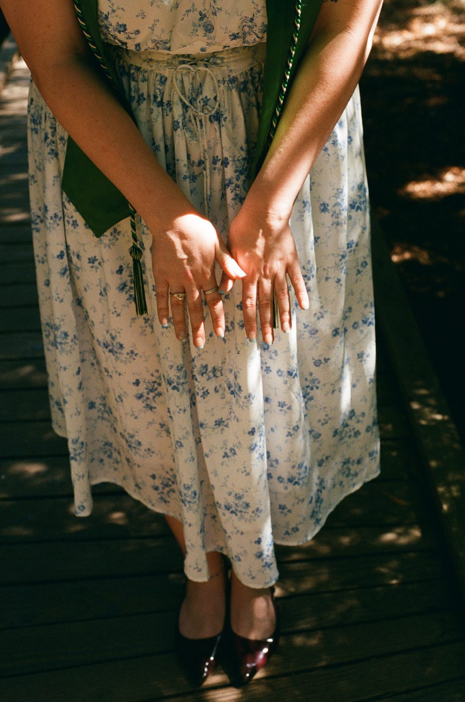
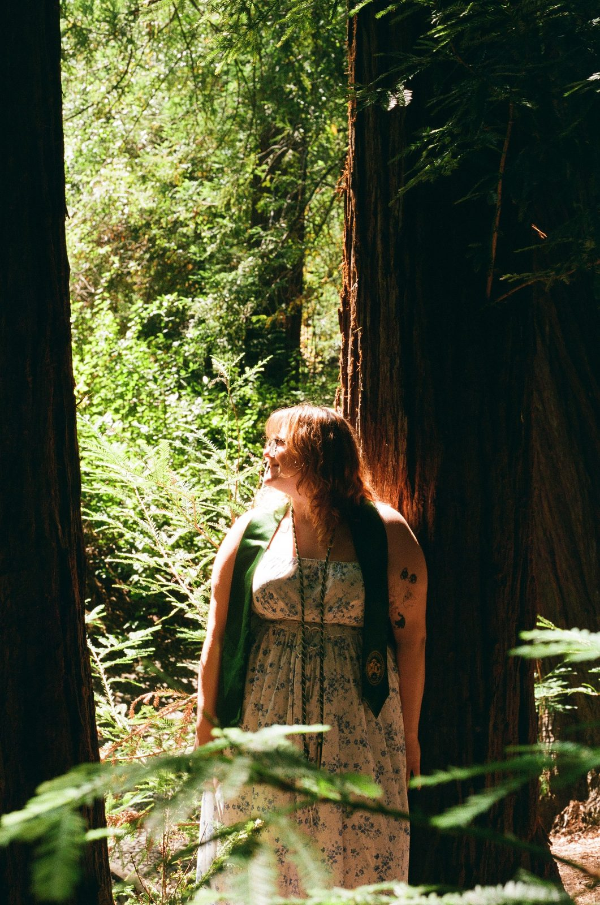
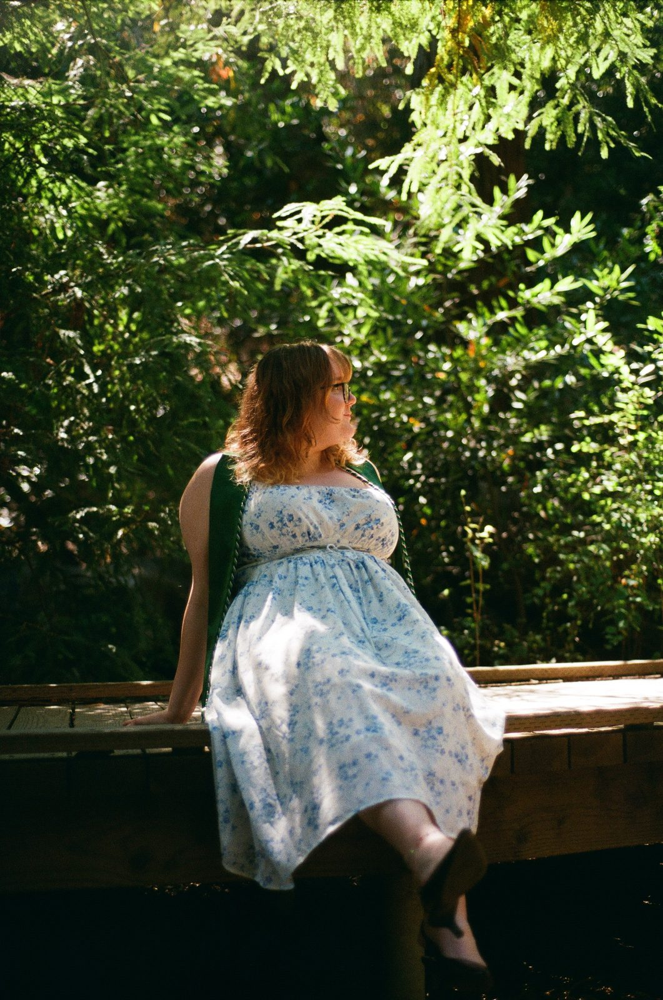
THE CONTACT SHEET
Thirteen keepers from one roll.
Click any frame to view it full size.
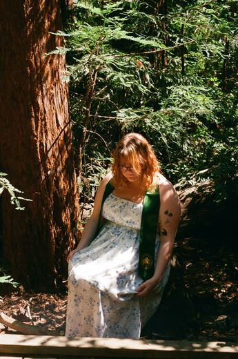
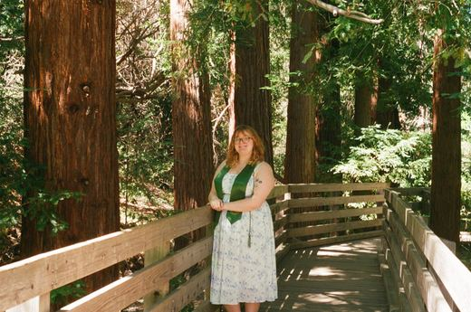
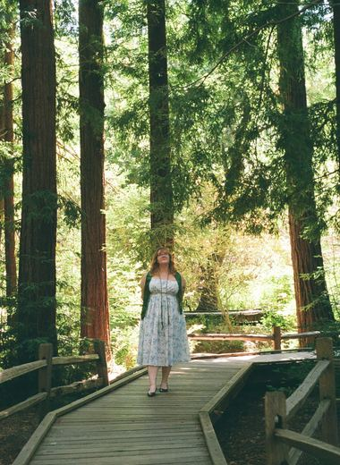
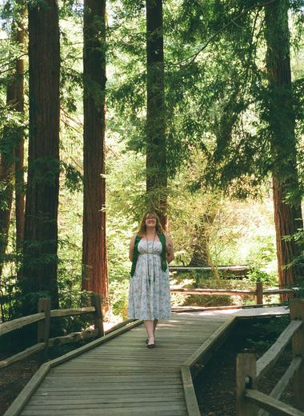
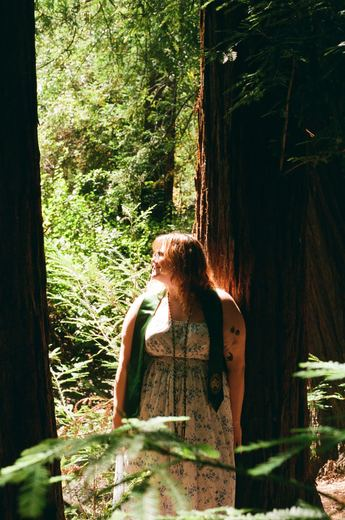
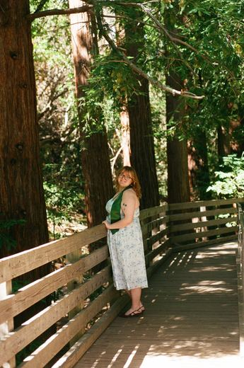
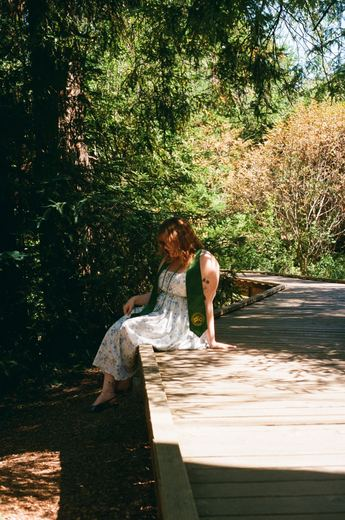
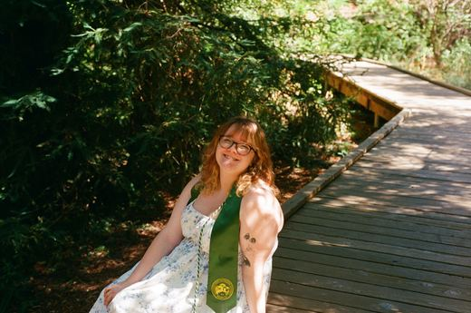
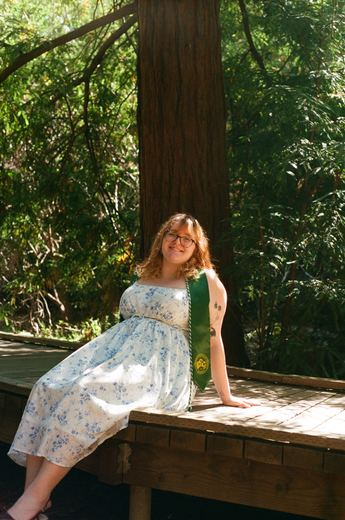
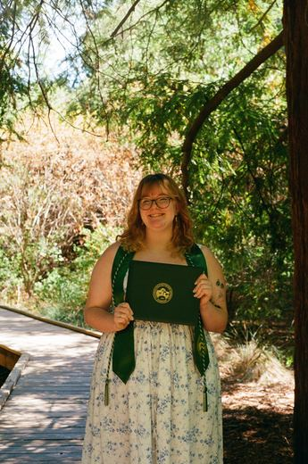
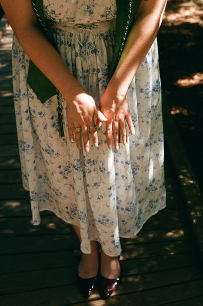